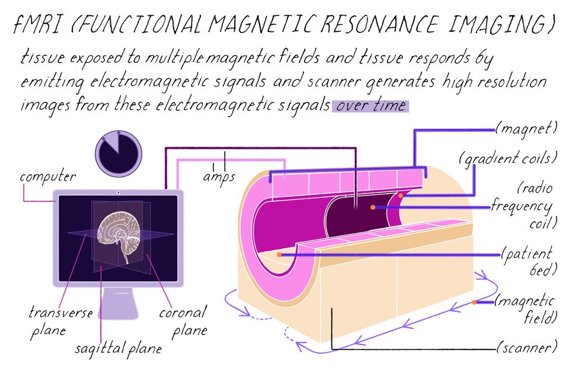

Seeing the brain at work
Structural CT and MRI show the shape of the brain. Functional neuroimaging shows how it works: which areas become active when we speak, remember or feel, and how they communicate with each other. It has transformed neuroscience over the past three decades.
The techniques
| Technique | What it measures | Spatial resolution | Temporal resolution |
|---|---|---|---|
| Functional MRI (fMRI) | Changes in blood oxygenation | Millimetres | Seconds |
| PET | Glucose use, blood flow, receptors | Millimetres | Minutes |
| EEG | Electrical activity | Centimetres | Milliseconds |
| Magnetoencephalography (MEG) | Magnetic fields from brain activity | Millimetres to centimetres | Milliseconds |
| Functional near-infrared spectroscopy (fNIRS) | Surface oxygenation | Centimetres | Seconds; portable, useful in babies |
Functional MRI


When a group of neurons becomes active, more oxygenated blood reaches that area, more than they consume (neurovascular coupling). Haemoglobin with and without oxygen has different magnetic properties, and the scanner detects that change: the BOLD signal, described by Seiji Ogawa in 1990. See cerebral circulation.
It is important to understand its limitations:
- It measures blood, not neurons directly, with a delay of a few seconds.
- Images of "lit-up brains" are statistics, comparisons between conditions, not photographs.
- Many older studies had small samples and results that were hard to reproduce. A famous 2009 study found "activity" in the brain of a dead salmon, to show the danger of not correcting statistics properly.
Clinical use
- Before surgery for epilepsy or tumours, to locate the language and movement areas and protect them. See neurosurgery.
- Detecting covert consciousness in patients who cannot respond. See consciousness.
The brain at rest
In 2001 Marcus Raichle described the default mode network: a set of areas that become active when we are not doing any particular task, when the mind wanders, recalls the past or imagines the future. It is disrupted early in Alzheimer's, because it overlaps with the areas where amyloid builds up. There are other resting networks: attention, salience, executive.
The connectome
The connectome is the complete map of the brain's connections. It is studied at two scales:
- Macroscale: tractography, an MRI technique (diffusion tensor imaging), follows the movement of water along axons and reconstructs the large white matter bundles. The Human Connectome Project (2009-2021) mapped the connections of more than a thousand people and divided the cortex into 180 areas per hemisphere.
- Microscale: the map of every neuron and every synapse. The map of the worm C. elegans (302 neurons) was completed in 1986, that of the fruit fly (about 140,000 neurons) in 2024, and a cubic millimetre of human cortex in 2024, with 57,000 cells and 150 million synapses.
Applications and the future
- Understanding how networks reorganise after a stroke and guiding rehabilitation.
- Planning deep brain stimulation and neuromodulation according to each patient's connections.
- Brain-computer interfaces.
- Network differences in multiple sclerosis, Parkinson's and psychiatric disorders.
Sources
- Ogawa S, et al. Brain magnetic resonance imaging with contrast dependent on blood oxygenation. Proc Natl Acad Sci U S A. 1990;87:9868-72.
- Raichle ME, et al. A default mode of brain function. Proc Natl Acad Sci U S A. 2001;98:676-82.
- Glasser MF, et al. A multi-modal parcellation of human cerebral cortex. Nature. 2016;536:171-8.
- Dorkenwald S, et al. Neuronal wiring diagram of an adult brain. Nature. 2024;634:124-38.
- Shapson-Coe A, et al. A petavoxel fragment of human cerebral cortex reconstructed at nanoscale resolution. Science. 2024;384:eadk4858.